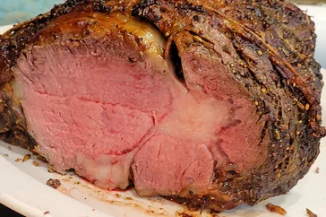

Prime rib

If you've ever carved into a prime rib at a big holiday meal expecting a juicy, perfectly pink interior only to discover a dry, overcooked roast, this recipe is for you.
Here are some tips from Chef John to get you started
Prime Rib Tips
- This simple, foolproof "mathematical method" for making the very best prime rib will greatly increase your chances of success.
Here is the formula: Multiply the exact weight times 5 minutes. For me it was 5.35 x 5 = 26.75 minutes, which we round up to 27
- You'll cook your room-temperature prime rib at 500 degrees F for exactly that many minutes. (Twenty-seven minutes, in my case.)
Then turn off the oven and wait 2 hours without opening the door.
When the time's up, remove the prime rib and slice into the most perfectly medium-rare meat you've ever seen. See?
That's all it takes to make foolproof prime rib cooked to a perfect pink that's somewhere just a shade under medium rare.
- Just make sure you're starting with a prime rib that has been brought to room temperature!
This is critical in order for the math to work!
- Serve your prime rib with Chef John's Beef Au Jus and Horseradish Sauce.